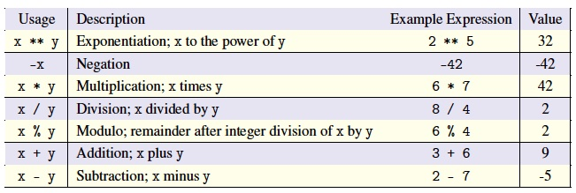

Operators can be used to write expressions that compute new values from existing pieces of data. We say that the operator operates on these pieces of data. For example, we mentioned earlier that one common operator is the + sign, and so the expression 2 + 3 has the value 5. The data items that an operator operates on are call operands. Operands can be any expression. Most of the operators we will see are binary operators because they require two operands. Here the word “binary” only conveys that the operator requires two operands, as opposed to unary operators which only require one operand. Do not confuse binary operands with binary numbers — the latter are entirely different.
Operands need not be literals, they can be variables too:
Since x refers to the integer 2, and y refers to the integer 3, the value of the expression x + y is 5, which is the value that gets associated with the variable z and then printed to the screen. This is also a good time to note that a variable name cannot be used in an expression if it has not been assigned to a value. For example:
The basic arithmetic operators in Python are summarized in the following table:

When using arithmetic operators in Python, the usual order of operations that you’re used to from math applies and is reflected in the table above. The operators higher in the table are evaluated before operations lower in the table. Multiplication, division, and modulo have the same precedence, and if more than one of these appears in the same expression, they are evaluated from left to right. Addition and subtraction have the same precedence (but lower than the others) and, again, are evaluated from left to right.
As you might expect, you can override the normal order of operations by enclosing things in parentheses. The parentheses have higher precedence than any of the operators. As an example, the value of the expression 2 * 4 + 10 * 3 is 38. Without parentheses, multiplication happens first, so the previous expression becomes 8 + 30. By contrast, the value of the expression 2 * (4+ 10) * 3 is 84. Because of the parentheses, the addition (4 + 10) happens first, so we now have 2 * 14 * 3, which is 84.
Recall that in Python, integers and floating-point numbers are completely different data types, and we have special notation (using a decimal point or not) to tell Python what kind of number we want to use. So what happens when we try to combine an integer and a floating-point number in an expression? Does Python even allow this? The answer is yes, but it can result in behaviour that is a bit tricky.
In general, the following rules apply when mixing integers and floats.
You’d expect the value of the expression 2 + 1.5 is 3.5. The tricky part is that the value of the expression 3/2 is not 1.5! In Processing, it can’t be, since both 3 and 2 are integers and 1.5 is a float. By the rules above, when we combine two integers, the result must also be an integer. Therefore, in Processing, 3/2 is just 1. This is an example of integer division, which is common in many computer languages. You can think of integer division as being like normal division, except that we drop (not round) all decimal places from the answer. So in integer division, 5/2 is 2, and 9/10 is 0. However, this behaviour is different when you use Python outside of Processing and for this reason, we will use ordinary Python when we do calculations.
On the subject of integer division, you might have noticed the modulo operator (represented by %) in the table above. Modulo is the complement of integer division; it gives us the remainder of performing division with whole numbers. For example, take the expression 5%2. When we limit ourselves to just integers, 2 goes into 5 just two whole times, after which there’s a remainder of 1. The modulo operator gives us that remainder, so 5%2 is 1.
Some arithmetic operators can be applied to string operands, but their meanings are different. The “addition” of two strings results in their concatenation, which means just joining them together one after the other. The “multiplication” of a string and a number n concatenates the string with itself n times. For example, the expression ‘Winter’ + ‘is’ + ‘coming!’ produces the string value ‘Winteriscoming!’. The expression ‘Na’ * 8 + ‘ BATMAN!’ produces the string value ‘NaNaNaNaNaNaNaNa BATMAN!’.